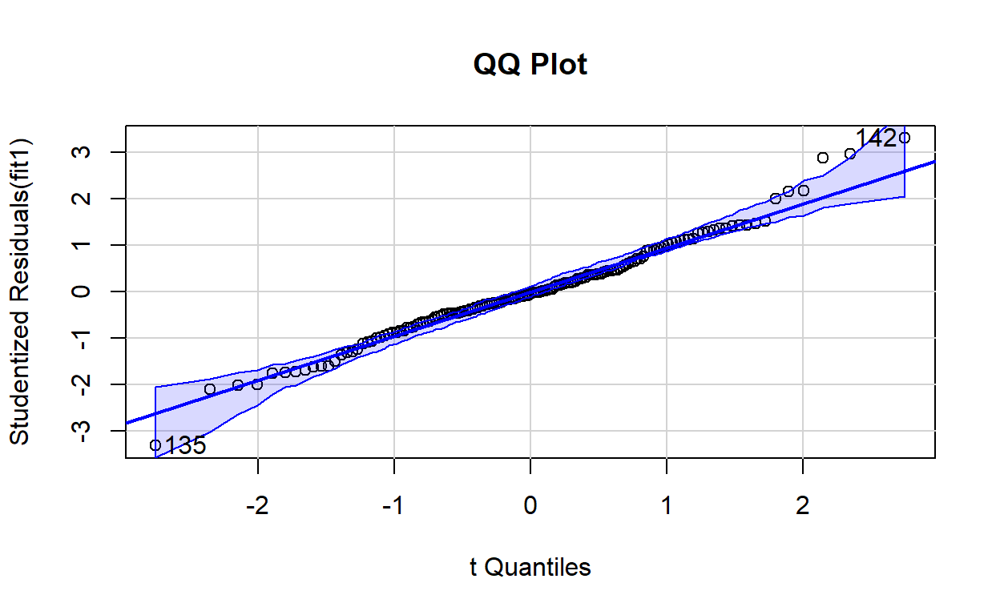
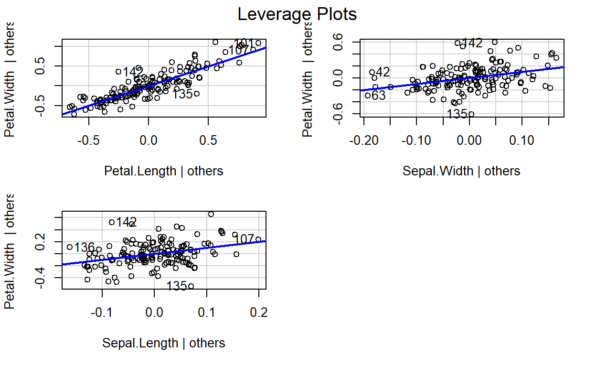
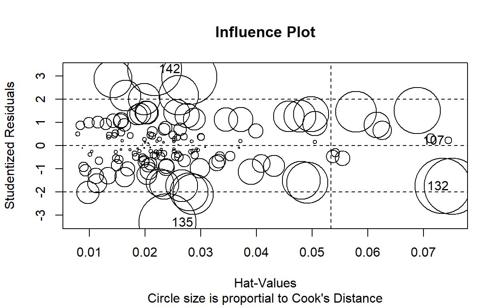
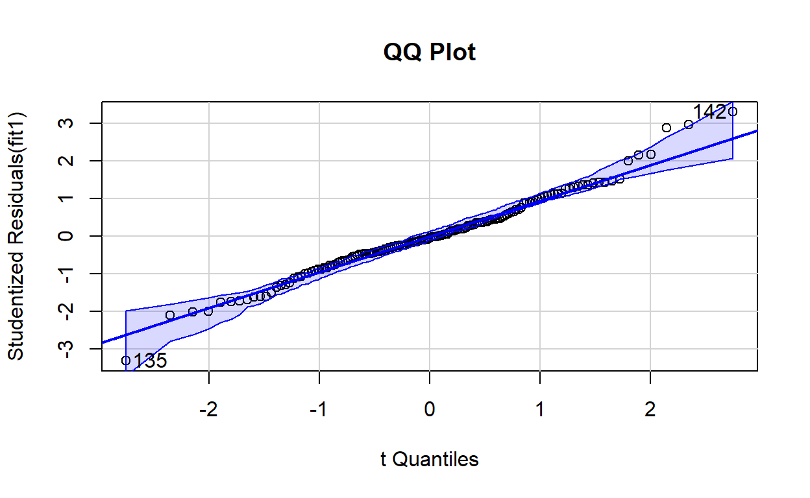
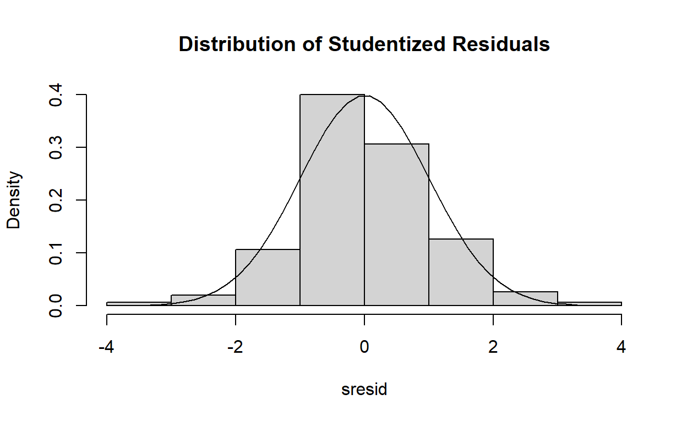
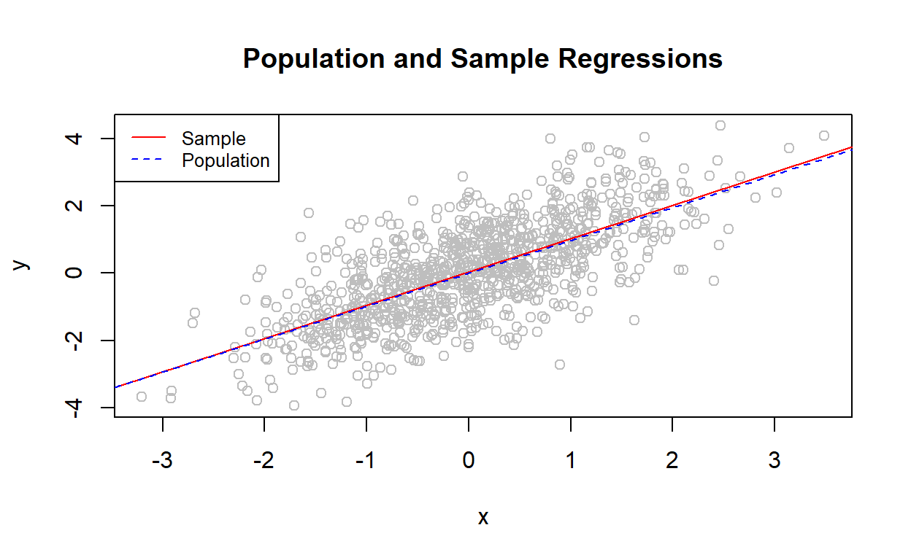
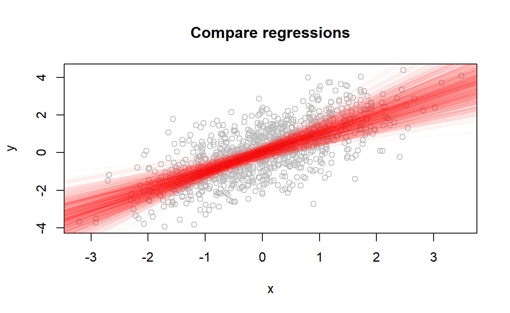
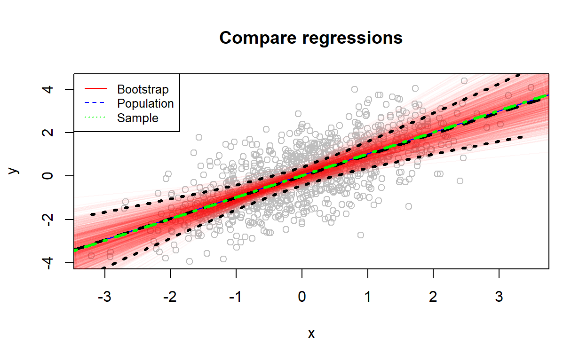
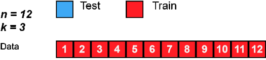
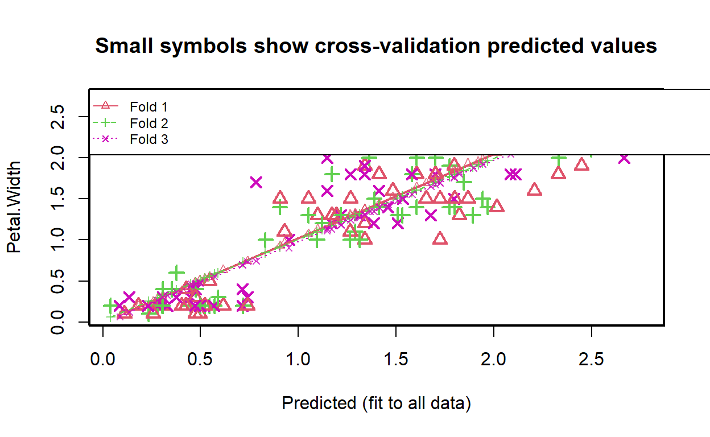

In the coming two weeks, we will take some time on basic concepts behind some simple linear models.
Linear regression
Definition
Let’s start with a a simple correlation among two variables:
# correlation
rairuoho<-read.table('https://www.dipintothereef.com/uploads/3/7/3/5/37359245/rairuoho.txt',header=T, sep="\t", dec=".")
cor.test(rairuoho$day6, rairuoho$day7)
Pearson's product-moment correlation
data: rairuoho$day6 and rairuoho$day7
t = 9.562, df = 46, p-value = 1.658e-12
alternative hypothesis: true correlation is not equal to 0
95 percent confidence interval:
0.6918585 0.8928613
sample estimates:
cor
0.8156516 We can repeat it for all days by building a Pearson coefficient matrix:
corr<-cor(rairuoho[,1:6])
corr # cor.test does not work on Matrix day3 day4 day5 day6 day7 day8
day3 1.0000000 0.7669682 0.5994600 0.5464308 0.3558050 0.2255945
day4 0.7669682 1.0000000 0.7692091 0.7943134 0.6027304 0.4544520
day5 0.5994600 0.7692091 1.0000000 0.7524457 0.5541184 0.4053586
day6 0.5464308 0.7943134 0.7524457 1.0000000 0.8156516 0.6754468
day7 0.3558050 0.6027304 0.5541184 0.8156516 1.0000000 0.8398937
day8 0.2255945 0.4544520 0.4053586 0.6754468 0.8398937 1.0000000Which however doesn’t give us the p-values of those correlations.
Many packages offer a better visualization of this matrix, such as
corrplot:
p.val<-rcorr(as.matrix(rairuoho[,1:6]))$P
corrplot(corr,type='upper',method='color', addCoef.col = "black", p.mat=as.matrix(p.val), sig.level = 0.05,title = "Correlation Matrix", mar = c(2,0,2,0), diag=F)
Previously, we saw that this type of ‘relationship’ (a linear model
lm) between two variables can be added to a scatterplot
using the function abline

# remember `ggplot`
# ggplot(rairuoho, aes(x = day6, y = day7)) +
# geom_point() +
# stat_smooth(method = "lm", col = "red")Indeed our correlation derived from a simple linear regression. In Model I regression (indeed we have Model II when two variable in the regression equation are random , i.e. no controlled by the researcher), it is used to predict a quantitative outcome of a dependent variable \(y\) on the basis of one single independent predictor variable \(x\). The goal is to build a mathematical model (or formula) that defines \(y\) as a function of the \(x\) variable.
Once, we built a statistically significant model, it’s possible to use it for predicting future outcome on the basis of new \(x\) values.
Formula and basics
The formula of linear regression can be written as follows: \[ y = \beta_0 + \beta_1*x + \epsilon \]
where:
\(\beta_0\) and \(\beta_1\) are known as the regression beta coefficients or parameters:
- \(\beta_0\) is the intercept of the regression line; that is the predicted value when x = 0.
- \(\beta1\) is the slope of the regression line.
\(\epsilon\) is the error term (also known as the residual errors)
The figure below illustrates the linear regression model, where:
- the best-fit regression line is in blue
- the intercept (\(\beta_0\)) and the slope (\(\beta_1\)) are shown in green
- the error terms (\(\epsilon\)) are represented by vertical red lines

From the figure above, it can be seen that not all the data points fall exactly on the fitted regression line. Some of the points are above the blue curve and some are below it; overall, the residual errors (\(\epsilon\)) have approximately mean zero.
TERMINOLOGY ALERT
The sum of the squares of the residual errors are called the Residual Sum of Squares or RSS.
The average variation of points around the fitted regression line is called the Residual Standard Error (RSE). This is one the metrics used to evaluate the overall quality of the fitted regression model. The lower the RSE, the better it is.
Since the mean error term is zero, the outcome variable y can be approximately estimated as follow:
\[y= \beta_0+\beta_1*x\]
Mathematically, the beta coefficients (\(\beta_0\) and \(\beta_1\)) are determined so that the RSS is as minimal as possible. This method of determining the beta coefficients is technically called least squares regression or ordinary least squares (OLS) regression.
Once, the beta coefficients are calculated, a t-test is performed to check whether or not these coefficients are significantly different from zero. A non-zero beta coefficients means that there is a significant relationship between the predictors (\(x\)) and the outcome variable (\(y\)).
Computation
Finally! The simple linear regression tries to find the best line to predict \(y\) on the basis of \(x\).
In the iris data set, a linear model equation can be
written as follow:
\(Petal.Width = \beta_0 + \beta_1 * Petal.Length\)
In R language, it is translated using the function lm
and in order to determine the beta coefficients of the linear model:
model1 <- lm(Petal.Width ~ Petal.Length, data = iris)
model1$coefficients (Intercept) Petal.Length
-0.3630755 0.4157554 The results show the intercept (\(\beta_0\)) and the slope (\(\beta_1\)), i.e. the beta coefficients for
the Petal.Length variable
ggplot(iris, aes(x = Petal.Length, y = Petal.Width)) +
geom_point(aes(fill=Species),shape = 21, size=5) +
stat_smooth(method = "lm", col = "blue")
Interpretation
From the output above:
the estimated regression line equation can be written as follow: \(Petal.Width = -0.3631 + 0.4158*Petal.Length\)
the intercept (\(\beta_0\)) is \(-0.3631\). It can be interpreted as the predicted width of petal for a length of petal equal to zero. Regression through the origin is when you force the intercept of a regression model to equal zero. It’s also known as fitting a model without an intercept (e.g., the intercept-free linear model \(y = \beta_1*x\) is equivalent to the model \(y = \beta_0 + \beta_1*x\) with \(\beta_0=0\)). Knowing that the true relationship between your predictors and the expected value of your dependent variable has to pass through the origin would be a good reason for forcing the estimated relationship through the origin if you knew for certain what the true relationship was (be careful very rare cases where it is justified to remove the intercept).
the regression beta coefficient for the variable
Petal.Length(\(\beta1\)), also known as the slope, is \(0.4158\). This means that, for one unit of \(Petal.Length\), we can expect an increase of \(0.4158\) units in \(Petal.Width\).
Model assessment
Before using our model to predict \(Petal.Width\), we should make sure that this model is statistically significant, that is:
there is a statistically significant relationship between the predictor and the outcome variables
the model that we built fits very well the data in our hand.
Model summary
Using our lm model, we get a bit more than just the
coefficient (\(\beta0\)) and (\(\beta1\))
summary(model1)
Call:
lm(formula = Petal.Width ~ Petal.Length, data = iris)
Residuals:
Min 1Q Median 3Q Max
-0.56515 -0.12358 -0.01898 0.13288 0.64272
Coefficients:
Estimate Std. Error t value Pr(>|t|)
(Intercept) -0.363076 0.039762 -9.131 4.7e-16 ***
Petal.Length 0.415755 0.009582 43.387 < 2e-16 ***
---
Signif. codes: 0 '***' 0.001 '**' 0.01 '*' 0.05 '.' 0.1 ' ' 1
Residual standard error: 0.2065 on 148 degrees of freedom
Multiple R-squared: 0.9271, Adjusted R-squared: 0.9266
F-statistic: 1882 on 1 and 148 DF, p-value: < 2.2e-16Looking at only the p-values, this simple model seems to fit the data very well. But the output tells us much more. The summary outputs shows 6 components, including:
- Call shows the function call used to compute the regression model.
- Residuals provide a quick view of the distribution of the residuals, which by definition have a mean zero. Therefore, the median should not be far from zero, and the minimum and maximum should be roughly equal in absolute value.
- Coefficients shows the regression beta coefficients and their statistical significance. Predictor variables, that are significantly associated to the outcome variable, are marked by stars.
- Residual standard error (RSE), R-squared (R2) and the F-statistic are metrics that are used to check how well the model fits to our data.
Coefficients significance
The coefficients table, in the model statistical summary, shows:
- the estimates of the beta coefficients
- the standard errors (SE), which defines the accuracy of beta coefficients. For a given beta coefficient, the SE reflects how the coefficient varies under repeated sampling. It can be used to compute the confidence intervals and the t-statistic.
- the t-statistic and the associated p-value, which defines the statistical significance of the beta coefficients.
t-statistic and p-values
For a given predictor, the t-statistic (and its associated p-value) tests whether or not there is a statistically significant relationship between a given predictor and the outcome variable, that is whether or not the beta coefficient of the predictor is significantly different from zero.
The statistical hypotheses are as follow:
- Null hypothesis (H0): the coefficients are equal to zero (i.e., no relationship between x and y)
- Alternative Hypothesis (H1): the coefficients are not equal to zero (i.e., there is some relationship between \(x\) and \(y\))
Mathematically, for a given beta coefficient (\(\beta\)), the t-test is computed as \(t = (\beta - 0)/SE(\beta)\), where \(SE(\beta)\) is the SE of the coefficient \(\beta\). Simply said, the t-statistic measures the number of standard deviations that \(\beta\) is away from 0. Thus a large t-statistic will produce a small p-value (=different).
The higher the t-statistic (and the lower the p-value), the more significant the predictor. The symbols to the right (***) visually specifies the level of significance. The line below the table shows the definition of these symbols; one star means 0.01 < p < 0.05. The more the stars beside the variable’s p-value, the more significant the variable.
A statistically significant coefficient indicates that there is an association between the predictor (\(x\)) and the outcome (\(y\)) variable.
The t-statistic is a very useful guide for whether or not to include a predictor in a model. High t-statistics (which go with low p-values near 0) indicate that a predictor should be retained in a model, while very low t-statistics indicate a predictor could be dropped (Bruce and Bruce 2017).
Standard errors and confidence intervals
The standard error measures the variability/accuracy of the beta coefficients. It can be used to compute the confidence intervals of the coefficients.
For example, the 95% confidence interval for the coefficient \(\beta1\) is defined as \(\beta1 +/- 2*SE(\beta1)\), where:
the lower limits of \(\beta_1 = \beta_1 - 2*SE(\beta_1) = 0.415 - 2*0.009 = 0.397\)
the upper limits of \(\beta1 = \beta1 + 2*SE(\beta1) = 0.415 + 2*0.009 = 0.435\)
That is, there is approximately a 95% chance that the interval [0.397, 0.435] will contain the true value of \(\beta1\). Similarly the 95% confidence interval for \(\beta0\) can be computed as \(\beta0 +/- 2*SE(\beta0)\).
To get this information, either you calculate by hands or you simply call:
confint(model1) 2.5 % 97.5 %
(Intercept) -0.4416501 -0.2845010
Petal.Length 0.3968193 0.4346915Model accuracy
Once you identified that, at least, one predictor variable is significantly associated the outcome, you should continue the diagnostic by checking how well the model fits the data. This process is also referred to as the goodness-of-fit
The overall quality of the linear regression fit can be assessed using the following three parameters, displayed in the model summary:
- The Residual Standard Error (RSE)
The RSE (also known as the model sigma) is the residual variation, representing the average variation of the observations points around the fitted regression line. This is the standard deviation of residual errors.
RSE provides an absolute measure of patterns in the data that can’t be explained by the model. When comparing two models, the model with the small RSE is a good indication that this model fits the best the data.
Dividing the RSE by the average value of the outcome variable will give you the prediction error rate, which should be as small as possible.
In our example, RSE = 0.2065, meaning that the observed
Petal.width values deviate from the true regression line by
approximately 0.2065 units in average.
Whether or not an RSE of 0.2065 units is an acceptable
prediction error is subjective and depends on the problem context.
However, we can calculate the percentage error. In our data set, the
mean value of Petal.Width is 1.1993, and so the percentage error is
0.2065/1.1993 = 17%.
- The R-squared (\(R^2\))
The R-squared \(R^2\) ranges from 0 to 1 and represents the proportion of information (i.e. variation) in the data that can be explained by the model. The adjusted \(R^2\) adjusts \(R^2\) with the degrees of freedom.
The \(R^2\) measures, how well the model fits the data. For a simple linear regression, \(R^2\) is the square of the Pearson correlation coefficient.
A high value of \(R^2\) is a good indication. However, as the value of \(R^2\) tends to increase when more predictors are added in the model, such as in multiple linear regression model, you should mainly consider the adjusted \(R^2\)**, which is a penalized \(R^2\) for a higher number of predictors.
An (adjusted) \(R^2\) that is close to 1 indicates that a large proportion of the variability in the outcome has been explained by the regression model.
A number near 0 indicates that the regression model did not explain much of the variability in the outcome.
- F-statistic
The F-statistic gives the overall significance of the model. It assess whether at least one predictor variable has a non-zero coefficient.
In a simple linear regression, this test is not really interesting since it just duplicates the information in given by the t-test, available in the coefficient table. In fact, the F-test is identical to the square of the t-test: \(1882 = (43.387)^2\). That would be true in any model with 1 degree of freedom.
The F-statistic becomes more important once we start using multiple predictors as in multiple linear regression.
A large F-statistic will corresponds to a statistically significant p-value (p < 0.05). In our example, the F-statistic equal 1882 producing a p-value of < 2.2e-16, which is highly significant.
Multiple regression
Multiple linear regression is just an extension of simple linear regression used to predict an outcome variable (\(y\)) on the basis of multiple distinct predictor variables (\(x\)).
With three predictor variables (\(x\)), the prediction of \(y\) is expressed by the following equation:
\[y = \beta_0 + \beta_1*x_1 + \beta_2*x_2 + \beta_3*x_3\]
The “\(\beta\)” values are called the regression weights (or beta coefficients). They measure the association between the predictor variable and the outcome. “\(\beta_j\)” can be interpreted as the average effect on \(y\) of a one unit increase in “\(x_j\)”, holding all other predictors fixed.
Fitting the model
R provides comprehensive support for multiple linear regression. We
want to build a model for estimating Petal.Width based on
data we get on Petal.Length, Sepal.Length, and
Sepal.Width.
\[Petal.Width = \beta_0 + \beta_1*Petal.Length + \beta_2*Sepal.Length + \beta_3*Sepal.Width\] You can now easily compute this in R as follow:
Call:
lm(formula = Petal.Width ~ Petal.Length + Sepal.Width + Sepal.Length,
data = iris)
Residuals:
Min 1Q Median 3Q Max
-0.60959 -0.10134 -0.01089 0.09825 0.60685
Coefficients:
Estimate Std. Error t value Pr(>|t|)
(Intercept) -0.24031 0.17837 -1.347 0.18
Petal.Length 0.52408 0.02449 21.399 < 2e-16 ***
Sepal.Width 0.22283 0.04894 4.553 1.10e-05 ***
Sepal.Length -0.20727 0.04751 -4.363 2.41e-05 ***
---
Signif. codes: 0 '***' 0.001 '**' 0.01 '*' 0.05 '.' 0.1 ' ' 1
Residual standard error: 0.192 on 146 degrees of freedom
Multiple R-squared: 0.9379, Adjusted R-squared: 0.9366
F-statistic: 734.4 on 3 and 146 DF, p-value: < 2.2e-16Regression diagnostics
See here for functions and packages
Diagnostic plots
Diagnostic plots provide checks for heteroscedasticity, normality, and influential observations.
- Residuals vs. fitted plot.
This plot serves mainly to check the linearity, although lack of homoscedasticity or independence can also be detected. Under linearity, we expect the red line (a nonlinear fit of the mean of the residuals) to be almost flat. This means that the trend of \(Y_1,...,Y_n\) is linear with respect to the predictors. Heteroscedasticity can be detected also in the form of irregular vertical dispersion around the red line. The dependence between residuals can be detected (harder) in the form of non randomly spread residuals.
- Normal Q-Q plot. Check the normality
Under normality, we expect the points (sample quantiles of the standardized residuals vs. theoretical quantiles of a \(N(0,1)\) to align with the diagonal line, which represents the ideal position of the points if those were sampled from a \(N(0,1)\). It is usual to have larger departures from the diagonal in the extremes than in the center, even under normality, although these departures are more clear if the data is non-normal.
- Scale-location plot.
Serves for checking the homoscedasticity. It is similar to the first diagnostic plot, but now with the residuals standardized and transformed by a square root (of the absolute value). This change transforms the task of spotting heteroskedasticity by looking into irregular vertical dispersion patterns into spotting for nonlinearities, which is somehow simpler. Under homoscedasticity, we expect the red line to be almost flat. If there are consistent nonlinear patterns, then there is evidence of heteroscedasticity.
- Residuals versus Leverage to detect outlier and check for the normality. On this plot, you want to see that the red smoothed line stays close to the horizontal gray dashed line and that no points have a large Cook’s distance (i.e, >0.5).
Outliers
# Assessing Outliers
outlierTest(fit1) # Bonferonni p-value for most extreme obsNo Studentized residuals with Bonferroni p < 0.05
Largest |rstudent|:
rstudent unadjusted p-value Bonferroni p
135 -3.323084 0.0011271 0.16907qqPlot(fit1, main="QQ Plot") #qq plot for studentized resid
[1] 135 142leveragePlots(fit1) # leverage plots
Influential observations
# Influential Observations
# added variable plots
avPlots(fit1)
# Cook's D plot
# identify D values > 4/(n-k-1)
cutoff <- 4/((nrow(iris)-length(fit1$coefficients)-2))
plot(fit1, which=4, cook.levels=cutoff)# Influence Plot
influencePlot(fit1, id.method="identify", main="Influence Plot", sub="Circle size is proportial to Cook's Distance" )
StudRes Hat CookD
107 0.218388 0.07440127 0.0009647108
132 -1.763159 0.07518199 0.0622805793
135 -3.323084 0.02404521 0.0636400285
142 3.302796 0.02171837 0.0566956801Non-normality
# Normality of Residuals
# qq plot for studentized resid
qqPlot(fit1, main="QQ Plot")
[1] 135 142# distribution of studentized residuals
sresid <- studres(fit1)
hist(sresid, freq=FALSE,
main="Distribution of Studentized Residuals")
xfit<-seq(min(sresid),max(sresid),length=40)
yfit<-dnorm(xfit)
lines(xfit, yfit)
Non-constant Error Variance
# Evaluate homoscedasticity
# non-constant error variance test
ncvTest(fit1)Non-constant Variance Score Test
Variance formula: ~ fitted.values
Chisquare = 25.96744, Df = 1, p = 3.4722e-07# plot studentized residuals vs. fitted values
spreadLevelPlot(fit1)
Suggested power transformation: 0.6773452 Multi-collinearity
A common problem that arises in multiple linear regression is the multi-collinearity. This is the situation when two or more predictors are highly linearly related between them. Multicollinearitiy has important effects on the fit of the model:
It reduces the precision of the estimates. As a consequence, signs of fitted coefficients may be reversed and valuable predictors may appear as non significant.
It is difficult to determine how each of the highly related predictors affects the response, since one masks the other. This may result in numerical instabilities.
An approach is to detect multicollinearity is to compute a correlation matrix between the predictors as we learned earlier

Here we can see what we already knew that Sepal.Length
and Petal.Length are highly linearly related. One could be
removed. However, it is not enough to inspect pair by pair correlations
in order to get rid of multicollinearity.A better approach is to compute
the Variance Inflation Factor (VIF) of each coefficient
\(\beta_j\). This is measure of how
linearly dependent is \(X_j\) with the
rest of predictors:
\[\text{VIF}(\beta_j)=\frac{1}{1-R^2_{X_j|X_{-j}}}\]
where \(R^2_{X_j|X_{-j}}\) is the \(R^2\) from a regression of \(X_j\) into the remaining predictors. The next rule of thumb gives direct insight into which predictors are multicollinear:
- VIF close to 1: absence of multicollinearity.
- VIF larger than 5 or 10: multicolinearity problematic.
Other considered \(\sqrt{VIF}>2\) as critical limit to consider multicollinearity.
# Evaluate Collinearity
car::vif(fit1) # variance inflation factorsPetal.Length Sepal.Width Sepal.Length
7.557780 1.839639 6.256954 Petal.Length Sepal.Width Sepal.Length
TRUE FALSE TRUE Nonlinearity


Non-independence of Errors
# Test for Autocorrelated Errors
durbinWatsonTest(fit1) lag Autocorrelation D-W Statistic p-value
1 0.2129038 1.573009 0.002
Alternative hypothesis: rho != 0Additional Diagnostic Help
Based on Pena and Slate (2006), the four assumptions in linear regression are normality, heteroscedasticity, and linearity, and what the authors refer to as uncorrelatedness.
The gvlma( ) function in the gvlma package,
performs a global validation of linear model assumptions as well
separate evaluations of skewness, kurtosis, and heteroscedasticity.
Call:
lm(formula = Petal.Width ~ Petal.Length + Sepal.Width + Sepal.Length,
data = iris)
Residuals:
Min 1Q Median 3Q Max
-0.60959 -0.10134 -0.01089 0.09825 0.60685
Coefficients:
Estimate Std. Error t value Pr(>|t|)
(Intercept) -0.24031 0.17837 -1.347 0.18
Petal.Length 0.52408 0.02449 21.399 < 2e-16 ***
Sepal.Width 0.22283 0.04894 4.553 1.10e-05 ***
Sepal.Length -0.20727 0.04751 -4.363 2.41e-05 ***
---
Signif. codes: 0 '***' 0.001 '**' 0.01 '*' 0.05 '.' 0.1 ' ' 1
Residual standard error: 0.192 on 146 degrees of freedom
Multiple R-squared: 0.9379, Adjusted R-squared: 0.9366
F-statistic: 734.4 on 3 and 146 DF, p-value: < 2.2e-16
ASSESSMENT OF THE LINEAR MODEL ASSUMPTIONS
USING THE GLOBAL TEST ON 4 DEGREES-OF-FREEDOM:
Level of Significance = 0.05
Call:
gvlma(x = fit1)
Value p-value Decision
Global Stat 45.91070 2.571e-09 Assumptions NOT satisfied!
Skewness 1.24561 2.644e-01 Assumptions acceptable.
Kurtosis 5.56557 1.832e-02 Assumptions NOT satisfied!
Link Function 0.03784 8.458e-01 Assumptions acceptable.
Heteroscedasticity 39.06169 4.106e-10 Assumptions NOT satisfied!This tests for the linear model assumptions and helpfully provides information on other assumptions. In this case we are going to look at the heteroskedasticity decisions, which has been identified as not being satisfied. We therefore reject the null hypothesis and state that there is heteroskedasticity in this model at the 5% significance level.
Global Stat This is the overall metric; this states whether the model, as a whole, passes or fails.
Skewness: measuring the distribution
Kurtosis: measuring the distribution, outliers, influential data, etc
Link function: misspecified model, how you linked the elements in the model assignment
Heteroscedasticity: looking for equal variance in the residuals
Dealing with violation of assumption
A method of choice for addressing any violations of assumptions is often simple scale transformation of either the dependent or the independent variables, or both. The Box-Cox transformation is a power transformation that eliminates non-linearity between variables, differing variances, and variable asymmetry.The ability to turn a variable into a new variable with a normal distribution is therefore very helpful.
The following expression gives the Box-Cox functions transformations for various values of lambda:
\(\frac{x^λ-1}λ\) if \(λ\neq0\)
\(log(x)\) if \(λ=0\)
being y the changed variable and lambda (λ) the transformation parameter However, the following table describes the most typical transformations:
| λ | Transformation |
|---|---|
| -2 | \(\frac{1}{x^2}\) |
| -1 | \(\frac{1}{x}\) |
| -0.5 | \(\frac{1}{\sqrt{x}}\) |
| 0 | \(log(x)\) |
| 0.5 | \(sqrt{x}\) |
| 1 | \(x\) |
| 2 | \(x^2\) |
In practice, it is advised to choose the value from the table rather than the precise value if the estimated transformation parameter is close to one of the values of the previous table because the value from the table is simpler to understand. Below is a quick implementation of Box-Cox transformation capabilities is introduced. In this instance, the goal is to find an exponent to use to transform the dependant variavel to help produce normality and homoscedasticity of the residuals. The peak of the curve in the plot yields λ, the scaling component.
boxcoxfit <- boxcox(fit1,plotit=T)# also see `boxCox` from **car**
# also see `BoxCoxTrans` from **caret** for individual variableFind the optimal λ for Box-Cox transformation
lambda <- boxcoxfit$x[which.max(boxcoxfit$y)]For this model, λ is was found to be about 0.667 (approximately equivalent to a square root transformation). This value would be used to transform the dependent variable and to rerun the previous analysis. But recall that the normality was not big deal earlier but the heteroscedasticity was at the opposite a big issue.
#fit new linear regression model using the Box-Cox transformation
new_fit <- lm(((iris$Petal.Width^lambda-1)/lambda) ~ Petal.Length + Sepal.Width + Sepal.Length, data = iris)The optimal λ was found to be 0.667. Thus, the new regression model replaced the original response variable y with the variable y = (y-0.667– 1) / -0.4242424. Also note that with the scale change, the values of the regression coefficients would become less readily interpretable.
gvlma(new_fit)
# not better at allBootstrap
Bootstrap is a method of random sampling with replacement. Among its other applications such as hypothesis testing, it is a simple yet powerful approach for checking the stability of regression coefficients.
Linear regression relies on several assumptions, and the coefficients of the formulas are presumably normally distributed under the CLT. It shows that on average if we repeated the experiment thousands and thousands of times, the line would be in confidence intervals.
The bootstrap approach does not rely on those assumption*, but simply performs thousands of estimations.
(Please note, that the bootstrap approach does not violate or bypass the normality assumptions, but rather than relying on the CLT, it builds its own, the Bootstrap distribution, which is asymptotically normal)
Dataset Simulation
We will simulate a dataset of one exploratory variable from the Gaussian distribution, and one response variable constructed by adding random noise to the exploratory variable. The population data would have 1000 observations.
set.seed(2021)
n <- 1000
x <- rnorm(n)
y <- x + rnorm(n)
population.data <- as.data.frame(cbind(x, y))We will take a sample of 20 observations from these data.
Simple regression models
Let’s explore the simple regression models both for population and for sample data:
x y
Min. :-3.20181 Min. :-3.94126
1st Qu.:-0.70930 1st Qu.:-0.99490
Median : 0.00489 Median : 0.05896
Mean : 0.01275 Mean : 0.05030
3rd Qu.: 0.72678 3rd Qu.: 1.03078
Max. : 3.48966 Max. : 4.37777
Call:
lm(formula = y ~ x, data = sample.data)
Residuals:
Min 1Q Median 3Q Max
-1.7410 -0.6650 0.1611 0.5087 1.3680
Coefficients:
Estimate Std. Error t value Pr(>|t|)
(Intercept) -0.0003999 0.2021953 -0.002 0.998
x 0.9793899 0.1958778 5.000 9.28e-05 ***
---
Signif. codes: 0 '***' 0.001 '**' 0.01 '*' 0.05 '.' 0.1 ' ' 1
Residual standard error: 0.9027 on 18 degrees of freedom
Multiple R-squared: 0.5814, Adjusted R-squared: 0.5581
F-statistic: 25 on 1 and 18 DF, p-value: 9.284e-05We can see, that the intercept is biased for the sample data; however, the slope coefficient is very close to the population one, even though we have only 20 observations in our sample dataset. The standard errors are much higher for the sample model.
If we plot the models, we can see how close the lines are:

Bootstrap Approach
The Bootstrap approach asks a question: what if we resample the data with replacement and estimate the coefficients, how extreme would it be?

Here is a simple loop of 1000 trials, which resamples with replacement these 20 observations from our sample dataset, runs the regression model and saves the coefficients we get there. In the end, we would have 1000 pairs of coefficients.
# Containers for the coefficients
sample_coef_intercept <- NULL
sample_coef_x1 <- NULL
for (i in 1:1000) {
#Creating a resampled dataset from the sample data
sample_d = sample.data[sample(1:nrow(sample.data), nrow(sample.data), replace = TRUE), ]
#Running the regression on these data
model_bootstrap <- lm(y ~ x, data = sample_d)
#Saving the coefficients
sample_coef_intercept <-
c(sample_coef_intercept, model_bootstrap$coefficients[1])
sample_coef_x1 <-
c(sample_coef_x1, model_bootstrap$coefficients[2])
}
coefs <- rbind(sample_coef_intercept, sample_coef_x1)We would take the average of these coefficients, and compare them with the other models we previously obtained:
| population | sample | bootstrap | |
|---|---|---|---|
| (Intercept) | 0.0377 | -0.0004 | 0.0272 |
| x | 0.9882 | 0.9794 | 0.9997 |
| 2.5 % | 97.5 % | 2.5 % | 97.5 % | 2.5 % | 97.5 % | |
|---|---|---|---|---|---|---|
| population | population | sample | sample | bootstrap | bootstrap | |
| (Intercept) | -0.0255 | 0.1009 | -0.4252 | 0.4244 | -0.35 | 0.3765 |
| x | 0.9262 | 1.0503 | 0.5679 | 1.3909 | 0.5789 | 1.4969 |
We can see, that the precision is almost identical to the sample model’s, and even slightly tighter for the intercept.
The graphical representation
First, the bootstrap representation:

NULLThese are 1000 possible regression lines we have estimated. Now let’s add to the plot population, sample, and average bootstrap lines.
NULL
We can see that they essentially capture the data in the same way. Now let’s add the confidence intervals from the sample data:
NULL
This completes our research: we may conclude, that the bootstrapping approach returns essentially the same results but in a statistically different fashion. We do not rely on assumptions but simulate the data using a brute force method. This could be especially useful when we have doubts about the distribution the data arrived from, or want to check the stability of the coefficients, particularly for small datasets.
Iris
Going back to our iris dataset, and addresing
multicollinearity issue:
Let’s get back to fit2 and use a a bootstrap
approach:
BOOTSTRAP OF LINEAR MODEL (method = rows)
Original Model Fit
------------------
Call:
lm(formula = Petal.Width ~ Sepal.Width + Sepal.Length, data = iris)
Coefficients:
(Intercept) Sepal.Width Sepal.Length
-1.5635 -0.4787 0.7233
Bootstrap SD's:
(Intercept) Sepal.Width Sepal.Length
0.33183730 0.06546793 0.03802357 Good for new prediction, but a more comprehensive alternative using
function Boot() from the car package”:
# can specify casewise or residual sampling with the method argument
fit3.boot <- Boot(fit2, f=coef, R=1000, method=c("case"))
summary(fit3.boot, high.moments=T)
Number of bootstrap replications R = 1000
original bootBias bootSE bootMed bootSkew
(Intercept) -1.56349 -0.00993770 0.346671 -1.54587 -0.15458
Sepal.Width -0.47872 0.00225778 0.067385 -0.47788 0.16465
Sepal.Length 0.72329 0.00063463 0.038462 0.72115 0.12684
bootKurtosis
(Intercept) 0.29403
Sepal.Width 0.36530
Sepal.Length 0.31195Fit 2 is not too bad overall !!!
Cross Validation
Two types
Two types of cross-validation can be distinguished: exhaustive and non-exhaustive cross-validation.
- Exhaustive cross-validation
Exhaustive cross-validation methods are cross-validation methods which learn and test on all possible ways to divide the original sample into a training and a validation set.

- Non-exhaustive cross-validation
Non-exhaustive cross validation methods do not compute all ways of splitting the original sample. These methods are approximations of leave-p-out cross-validation.

You can do K-Fold cross-validation using the cv.lm( )
function in the DAAG package.
# K-fold cross-validation
cv.lm(iris, fit2, m=3) # 3 fold cross-validation
fold 1
Observations in test set: 50
3 4 8 10 13
Predicted 0.3040719 0.27961484 0.4253152 0.4966024 0.4721454
cvpred 0.3097450 0.28805173 0.4264995 0.5081553 0.4864620
Petal.Width 0.2000000 0.20000000 0.2000000 0.1000000 0.1000000
CV residual -0.1097450 -0.08805173 -0.2264995 -0.4081553 -0.3864620
14 24 26 27 31
Predicted 0.11049937 0.54551657 0.6168038 0.42531524 0.4242732
cvpred 0.11962273 0.55154187 0.6331977 0.42649947 0.4347874
Petal.Width 0.10000000 0.50000000 0.2000000 0.40000000 0.2000000
CV residual -0.01962273 -0.05154187 -0.4331977 -0.02649947 -0.2347874
34 36 37 38 39
Predicted 0.4039842 0.5210595 0.7390891 0.2572418 0.182828571
cvpred 0.3799423 0.5298486 0.7416642 0.2497825 0.192990578
Petal.Width 0.2000000 0.2000000 0.2000000 0.1000000 0.200000000
CV residual -0.1799423 -0.3298486 -0.5416642 -0.1497825 0.007009422
46 59 62 63 65
Predicted 0.4721454 1.8219431 1.2677666 1.7230728 1.0986511
cvpred 0.4864620 1.8587578 1.2935083 1.7802726 1.1250793
Petal.Width 0.3000000 1.3000000 1.5000000 1.0000000 1.3000000
CV residual -0.1864620 -0.5587578 0.2064917 -0.7802726 0.1749207
67 68 69 77 81
Predicted 1.0507790 1.3390538 1.8677312 2.0144736 1.2656826
cvpred 1.0734048 1.3751642 1.9270083 2.0571681 1.3100843
Petal.Width 1.5000000 1.0000000 1.5000000 1.4000000 1.1000000
CV residual 0.4265952 -0.3751642 -0.4270083 -0.6571681 -0.2100843
83 84 85 87 95
Predicted 1.3390538 1.48371216 0.9061206 1.7985280 1.19439536
cvpred 1.3751642 1.52189985 0.9266691 1.8287766 1.22842845
Petal.Width 1.2000000 1.60000000 1.5000000 1.5000000 1.30000000
CV residual -0.1751642 0.07810015 0.5733309 -0.3287766 0.07157155
97 99 102 103 104
Predicted 1.1709803 0.9284936 1.3390538 2.13571697 1.6049555
cvpred 1.1984472 0.9649383 1.3751642 2.17392255 1.6386543
Petal.Width 1.3000000 1.1000000 1.9000000 2.10000000 1.8000000
CV residual 0.1015528 0.1350617 0.5248358 -0.07392255 0.1613457
105 108 113 115 120
Predicted 1.7017418 2.3282475 1.918729 1.291182 1.7230728
cvpred 1.7337154 2.3723328 1.953819 1.323490 1.7802726
Petal.Width 2.2000000 1.8000000 2.100000 2.400000 1.5000000
CV residual 0.4662846 -0.5723328 0.146181 1.076510 -0.2802726
124 125 128 130 131
Predicted 1.7006998 1.7027838 1.412425 2.2080462 2.4484488
cvpred 1.7420034 1.7254275 1.440244 2.2472904 2.4973752
Petal.Width 1.8000000 2.1000000 1.800000 1.6000000 1.9000000
CV residual 0.0579966 0.3745725 0.359756 -0.6472904 -0.5973752
134 136 140 147 149
Predicted 1.6528276 2.5696922 1.9431864 1.79644403 1.2932656
cvpred 1.6903289 2.6141297 1.9755123 1.84535251 1.3069137
Petal.Width 1.5000000 2.3000000 2.1000000 1.90000000 2.3000000
CV residual -0.1903289 -0.3141297 0.1244877 0.05464749 0.9930863
Sum of squares = 7.91 Mean square = 0.16 n = 50
fold 2
Observations in test set: 50
1 2 11 12 15
Predicted 0.4497723 0.5444746 0.5710156 0.28065684 0.7167161
cvpred 0.4648058 0.5580558 0.5844039 0.29803077 0.7281424
Petal.Width 0.2000000 0.2000000 0.2000000 0.20000000 0.2000000
CV residual -0.2648058 -0.3580558 -0.3844039 -0.09803077 -0.5281424
17 22 23 28 30
Predicted 0.47527138 0.35402805 0.04025418 0.5221015 0.3040719
cvpred 0.49005004 0.37045194 0.06104227 0.5361231 0.3210673
Petal.Width 0.40000000 0.40000000 0.20000000 0.2000000 0.2000000
CV residual -0.09005004 0.02954806 0.13895773 -0.3361231 -0.1210673
33 42 44 45 47
Predicted 0.2348687 0.5902627 0.3774431 0.30615591 0.3061559
cvpred 0.2530615 0.6030250 0.3934885 0.32327501 0.3232750
Petal.Width 0.1000000 0.3000000 0.6000000 0.40000000 0.2000000
CV residual -0.1530615 -0.3030250 0.2065115 0.07672499 -0.1232750
49 51 53 58 60
Predicted 0.4986864 1.9676435 1.9431864 0.8317074 0.9050786
cvpred 0.5130866 1.9613657 1.9372253 0.8411174 0.9135386
Petal.Width 0.2000000 1.4000000 1.5000000 1.0000000 1.4000000
CV residual -0.3130866 -0.5613657 -0.4372253 0.1588826 0.4864614
61 66 70 71 72
Predicted 1.0955251 1.7985280 1.2901396 1.1720223 1.5081692
cvpred 1.1011424 1.7945906 1.2931617 1.1768752 1.5082175
Petal.Width 1.0000000 1.4000000 1.1000000 1.8000000 1.3000000
CV residual -0.1011424 -0.3945906 -0.1931617 0.6231248 -0.2082175
76 78 79 80 82
Predicted 1.7740710 1.8464002 1.3879679 1.3145967 1.2656826
cvpred 1.7704503 1.8417676 1.3897233 1.3173021 1.2690213
Petal.Width 1.4000000 1.7000000 1.5000000 1.0000000 1.0000000
CV residual -0.3704503 -0.1417676 0.1102767 -0.3173021 -0.2690213
88 89 92 96 98
Predicted 1.8921883 1.0507790 1.41242497 1.12310817 1.5326263
cvpred 1.8867368 1.0572771 1.41386365 1.12859437 1.5323579
Petal.Width 1.3000000 1.3000000 1.40000000 1.20000000 1.3000000
CV residual -0.5867368 0.2427229 -0.01386365 0.07140563 -0.2323579
100 106 110 111 112
Predicted 1.21885243 2.4973630 1.9208134 1.6059975 1.7730290
cvpred 1.22294823 2.4836235 1.9152926 1.6047791 1.7693464
Petal.Width 1.30000000 2.1000000 2.5000000 2.0000000 1.9000000
CV residual 0.07705177 -0.3836235 0.5847074 0.3952209 0.1306536
114 116 118 127 132
Predicted 1.362469 1.5336683 2.18671511 1.5804984 2.331374
cvpred 1.364479 1.5334618 2.17752533 1.5795348 2.320160
Petal.Width 2.000000 2.3000000 2.20000000 1.8000000 2.000000
CV residual 0.635521 0.7665382 0.02247467 0.2204652 -0.320160
135 141 145 146 148
Predicted 1.6039135 1.7985280 1.7027838 1.8464002 1.7017418
cvpred 1.6025714 1.7945906 1.7002368 1.8417676 1.6991329
Petal.Width 1.4000000 2.4000000 2.5000000 2.3000000 2.0000000
CV residual -0.2025714 0.6054094 0.7997632 0.4582324 0.3008671
Sum of squares = 6.43 Mean square = 0.13 n = 50
fold 3
Observations in test set: 50
5 6 7 9
Predicted 0.3295710 0.47527138 0.1359984 0.2307007029
cvpred 0.3191246 0.47318765 0.1199458 0.2008190896
Petal.Width 0.2000000 0.40000000 0.3000000 0.2000000000
CV residual -0.1191246 -0.07318765 0.1800542 -0.0008190896
16 18 19 20 21
Predicted 0.45289832 0.4497723 0.7401311 0.306155915 0.714632
cvpred 0.46466687 0.4365928 0.7353609 0.301245734 0.698766
Petal.Width 0.40000000 0.3000000 0.3000000 0.300000000 0.200000
CV residual -0.06466687 -0.1365928 -0.4353609 -0.001245734 -0.498766
25 29 32 35 40
Predicted 0.28065684 0.5699736 0.714632 0.4966024 0.4976444
cvpred 0.26465084 0.5540610 0.698766 0.4723504 0.4817084
Petal.Width 0.20000000 0.2000000 0.400000 0.2000000 0.2000000
CV residual -0.06465084 -0.3540610 -0.298766 -0.2723504 -0.2817084
41 43 48 50 52
Predicted 0.37744311 0.08708431 0.23174271 0.4731874 1.5336683
cvpred 0.36424023 0.06547206 0.21017713 0.4544716 1.5125227
Petal.Width 0.30000000 0.20000000 0.20000000 0.2000000 1.5000000
CV residual -0.06424023 0.13452794 -0.01017713 -0.2544716 -0.0125227
54 55 56 57 64
Predicted 1.31355469 1.7974860 1.2188524 1.4134670 1.46029710
cvpred 1.26739099 1.7653379 1.1865177 1.3950545 1.43081213
Petal.Width 1.30000000 1.5000000 1.3000000 1.6000000 1.40000000
CV residual 0.03260901 -0.2653379 0.1134823 0.2049455 -0.03081213
73 74 75 86 90
Predicted 1.7964440 1.5081692 1.6772847 1.1486072 1.2178104
cvpred 1.7559799 1.4759278 1.6478697 1.1328812 1.1771596
Petal.Width 1.5000000 1.2000000 1.3000000 1.6000000 1.3000000
CV residual -0.2559799 -0.2759278 -0.3478697 0.4671188 0.1228404
91 93 94 101 107
Predicted 1.16993830 1.3869259 0.95190869 1.413467 0.7838352
cvpred 1.13204396 1.3491016 0.90562833 1.395054 0.7430444
Petal.Width 1.20000000 1.2000000 1.00000000 2.500000 1.7000000
CV residual 0.06795604 -0.1491016 0.09437167 1.104946 0.9569556
109 117 119 121 122
Predicted 2.085761 1.7017418 2.7611807 1.8953143 1.1465232
cvpred 2.045390 1.6751066 2.7237997 1.8742854 1.1141651
Petal.Width 1.800000 1.8000000 2.3000000 2.3000000 2.0000000
CV residual -0.245390 0.1248934 -0.4237997 0.4257146 0.8858349
123 126 129 133 137
Predicted 2.6654364 2.1123019 1.7251568 1.7251568 1.365595
cvpred 2.6335683 2.0913429 1.6929854 1.6929854 1.349939
Petal.Width 2.0000000 1.8000000 2.1000000 2.2000000 2.400000
CV residual -0.6335683 -0.2913429 0.4070146 0.5070146 1.050061
138 139 142 143 144
Predicted 1.5815404 1.3400958 1.943186 1.3390538 1.8229851
cvpred 1.5576384 1.3133439 1.919401 1.3039859 1.8019328
Petal.Width 1.8000000 1.8000000 2.300000 1.9000000 2.3000000
CV residual 0.2423616 0.4866561 0.380599 0.5960141 0.4980672
150
Predicted 1.2677666
cvpred 1.2409914
Petal.Width 1.8000000
CV residual 0.5590086
Sum of squares = 8.36 Mean square = 0.17 n = 50
Overall (Sum over all 50 folds)
ms
0.1513302 Sum the Mean Square Error (MSE) for each fold, divide by the number of observations, and take the square root to get the cross-validated standard error of estimate.
You can assess R2 shrinkage via K-fold cross-validation. Using the
crossval() function from the bootstrap
package, do the following:
# Assessing R2 shrinkage using 10-Fold Cross-Validation
# define functions
theta.fit <- function(x,y){lsfit(x,y)}
theta.predict <- function(fit,x){cbind(1,x)%*%fit$coef}
# matrix of predictors
X <- as.matrix(iris[c("Sepal.Width","Sepal.Length")])
# vector of predicted values
y <- as.matrix(iris[c("Petal.Width")])
results <- crossval(X,y,theta.fit,theta.predict,ngroup=3)
cor(y, fit2$fitted.values)**2 # raw R2 [,1]
Petal.Width 0.742928cor(y,results$cv.fit)**2 # cross-validated R2 [,1]
Petal.Width 0.7401434Comparing Models
Let’s change of data set to make it a bit more simple from now:
salaries and other information of 62 professors in Cohen et. al. (2003,
pp. 81-82). Check ?prof.salary.
data(prof.salary)We now build a serie of simple regression models
Check here for the regression diagnostics and influence analysis.
We can pass two linear models to anova and ask it to
compare them. We consider beginning wth fit.prof1 (only
pubs was an independent variable in that simple
regression), and compare fit.prof3 (which also included
cits as an independent variable) to test the increment in
the R-squared produced by the inclusion of cits. The F
value matches the Type III SS F test for cits and is the
square of the t value that tested the regression coefficient of
cits.
# compare model 3 to model 1 - stepping approach, evaluating a new variable (cits)
anova(fit.prof1,fit.prof3)# note this is anova, not AnovaAnalysis of Variance Table
Model 1: salary ~ pub
Model 2: salary ~ pub + citation
Res.Df RSS Df Sum of Sq F Pr(>F)
1 60 4274424497
2 59 3335822387 1 938602110 16.601 0.0001396 ***
---
Signif. codes: 0 '***' 0.001 '**' 0.01 '*' 0.05 '.' 0.1 ' ' 1The next illustration compares the full model to the simple regression that only contained cits (fit2). The test is therefore the test of an hypothesis that increment in SS accounted for by pubs is zero. And this F also matches the F test of the Type III SS seen above.
# compare model 3 to model 2 - stepping approach, evaluating a new variable (pubs)
anova(fit.prof2,fit.prof3)# note this is anova, not AnovaAnalysis of Variance Table
Model 1: salary ~ citation
Model 2: salary ~ pub + citation
Res.Df RSS Df Sum of Sq F Pr(>F)
1 60 4009743405
2 59 3335822387 1 673921018 11.919 0.001034 **
---
Signif. codes: 0 '***' 0.001 '**' 0.01 '*' 0.05 '.' 0.1 ' ' 1Variable Selection
An information criterion balances the fitness of a model with the number of predictors employed. Hence, it determines objectively the best model as the one that minimizes the information criterion. Two common criteria are the Bayesian Information Criterion (BIC) and the Akaike Information Criterion (AIC).
\(AIC(model)=-2*logLik(model) + npar(model) * 2\)
\(BIC(model)=-2*logLik(model) + npar(model) * log(n)\)
where \(Lik(model)\) is the likelihood of the model (how well the model fits the data) and \(npar(model)\) is the number of parameters of the model, \(k+2\) in the case of a multiple linear regression model with \(k\) predictors.The AIC replaces \(log(n)\) by \(2\), so it penalizes less complex models.This is one of the reasons why BIC is preferred by some practitioners for model comparison. Also, because is consistent in selecting the true model: if enough data is provided, the BIC is guaranteed to select the data-generating model among a list of candidate models.
Both are based on a balance between the model fitness and its
complexity.Both BIC and AIC can be computed in R
through the functions BIC and AIC. They take a
model as the input. The lower the better with a rule of thumb = 2.
[1] 1307.354[1] 1303.391[1] 1296.11[1] 1300.973[1] 1297.01[1] 1287.601However, selecting a subset of predictor variables from a larger set
(e.g., stepwise selection) remains a controversial topic. You can
perform stepwise selection (forward, backward, both) using the
stepAIC() and stepBIC() function from the
MASS package. stepAIC() performs stepwise
model selection by exact AIC.
# Stepwise Selection based on AIC
fit.prof5 <- lm(salary~citation+pub+time, data=prof.salary)
step1 <- stepAIC(fit.prof5, direction="both")Start: AIC=1102.26
salary ~ citation + pub + time
Df Sum of Sq RSS AIC
- pub 1 59458298 2926312249 1101.5
<none> 2866853951 1102.3
- time 1 468968436 3335822387 1109.7
- citation 1 634124345 3500978295 1112.7
Step: AIC=1101.53
salary ~ citation + time
Df Sum of Sq RSS AIC
<none> 2926312249 1101.5
+ pub 1 59458298 2866853951 1102.3
- citation 1 696719756 3623032005 1112.8
- time 1 1083431156 4009743405 1119.1step1$anova # display resultsStepwise Model Path
Analysis of Deviance Table
Initial Model:
salary ~ citation + pub + time
Final Model:
salary ~ citation + time
Step Df Deviance Resid. Df Resid. Dev AIC
1 58 2866853951 1102.259
2 - pub 1 59458298 59 2926312249 1101.532#Stepwise Selection with BIC
n<-dim(prof.salary)[1]
step2 <- stepAIC(fit.prof5, k=log(n), direction="both")Start: AIC=1110.77
salary ~ citation + pub + time
Df Sum of Sq RSS AIC
- pub 1 59458298 2926312249 1107.9
<none> 2866853951 1110.8
- time 1 468968436 3335822387 1116.0
- citation 1 634124345 3500978295 1119.0
Step: AIC=1107.91
salary ~ citation + time
Df Sum of Sq RSS AIC
<none> 2926312249 1107.9
+ pub 1 59458298 2866853951 1110.8
- citation 1 696719756 3623032005 1117.0
- time 1 1083431156 4009743405 1123.3step2$anova # display resultsStepwise Model Path
Analysis of Deviance Table
Initial Model:
salary ~ citation + pub + time
Final Model:
salary ~ citation + time
Step Df Deviance Resid. Df Resid. Dev AIC
1 58 2866853951 1110.768
2 - pub 1 59458298 59 2926312249 1107.914When applying stepAIC for BIC/AIC, different final
models might be selected depending on the choice of direction. This is
the interpretation:
“backward”: starts from the full model, removes predictors sequentially.“forward”: starts from the simplest model, adds predictors sequentially.“both”(default): combination of the above.
The advice is to try several of these methods and retain the one with minimum BIC/AIC. Set trace = 0 to omit lengthy outputs of information of the search procedure.
Alternatively, you can perform all-subsets regression using the
leaps() function from the leaps package. In
the following code nbest indicates the number of subsets of
each size to report. Here, the ten best models will be reported for each
subset size (1 predictor, 2 predictors, etc.).
# All Subsets Regression
leaps<-regsubsets(salary~citation+pub+time, data=prof.salary,nbest=10)
# view results
summary(leaps)Subset selection object
Call: regsubsets.formula(salary ~ citation + pub + time, data = prof.salary,
nbest = 10)
3 Variables (and intercept)
Forced in Forced out
citation FALSE FALSE
pub FALSE FALSE
time FALSE FALSE
10 subsets of each size up to 3
Selection Algorithm: exhaustive
citation pub time
1 ( 1 ) " " " " "*"
1 ( 2 ) "*" " " " "
1 ( 3 ) " " "*" " "
2 ( 1 ) "*" " " "*"
2 ( 2 ) "*" "*" " "
2 ( 3 ) " " "*" "*"
3 ( 1 ) "*" "*" "*" # plot a table of models showing variables in each model.
# models are ordered by the selection statistic.
plot(leaps,scale="r2")
# plot statistic by subset size
# subsets(leaps, statistic="rsq")Other options for plot() are bic, Cp, and adjr2. Other
options for plotting with subset() are bic, cp, adjr2, and
rss.
Model assesment
It turns out that:
Call:
lm(formula = salary ~ citation + time, data = prof.salary)
Residuals:
Min 1Q Median 3Q Max
-14809.6 -4364.9 -479.6 3960.7 22449.2
Coefficients:
Estimate Std. Error t value Pr(>|t|)
(Intercept) 39073.67 2396.47 16.305 < 2e-16 ***
citation 212.11 56.59 3.748 0.000408 ***
time 1061.76 227.18 4.674 1.76e-05 ***
---
Signif. codes: 0 '***' 0.001 '**' 0.01 '*' 0.05 '.' 0.1 ' ' 1
Residual standard error: 7043 on 59 degrees of freedom
Multiple R-squared: 0.4908, Adjusted R-squared: 0.4735
F-statistic: 28.43 on 2 and 59 DF, p-value: 2.258e-09The first step in interpreting the multiple regression analysis is to examine the F-statistic and the associated p-value, at the bottom of the model summary.
In our example, it can be seen that p-value of the F-statistic is
p-value: 2.258e-09, which is highly significant. This means
that, at least, one of the predictor variables is significantly related
to the outcome variable.
To see which predictor variables are significant, you can examine the coefficients table, which shows the estimate of regression beta coefficients and the associated t-statistic p-values:
summary(fit.prof6)$coefficient Estimate Std. Error t value Pr(>|t|)
(Intercept) 39073.6747 2396.47360 16.304655 1.593845e-23
citation 212.1116 56.59392 3.747958 4.078031e-04
time 1061.7642 227.17563 4.673759 1.761335e-05For a given predictor, the t-statistic evaluates whether or not there is significant association between this predictor and the outcome variable, that is whether the beta coefficient of the predictor is significantly different from zero.
It can be seen that, changes in citation and
time are both significantly associated to changes in
salary. For a given predictor variable, the coefficient
(\(\beta\)) can be interpreted as the
average effect on \(y\) of a one unit
increase in predictor, holding all other predictors fixed.
For example, for a fixed values of citation the increase
of one unit of time increase salary of 1061
unit on average (vs. 1379 unit in our example using a
simple linear regression). If a predictor was not significant in our
multiple regression model, it means that its change will not
significantly affect salary. Therefore, it is possible to
remove it from the model.
As we saw earlier, the confidence interval of the model coefficient can be extracted as follow:
confint(fit.prof6) 2.5 % 97.5 %
(Intercept) 34278.34213 43869.0073
citation 98.86747 325.3558
time 607.18682 1516.3416Accuracy
As we have seen in simple linear regression, the overall quality of the model can be assessed by examining the R-squared (\(R^2\)) and Residual Standard Error (RSE).
- The R-squared (\(R^2\))
In multiple linear regression, the \(R\) represents the correlation coefficient between the observed values of the outcome variable (\(y\)) and the fitted (i.e., predicted) values of \(y\). For this reason, the value of \(R\) will always be positive and will range from zero to one.
\(R^2\) represents the proportion of variance, in the outcome variable y, that may be predicted by knowing the value of the \(x\) variables. An \(R^2\) value close to 1 indicates that the model explains a large portion of the variance in the outcome variable.
A problem with the \(R^2\), is that, it will always increase when more variables are added to the model, even if those variables are only weakly associated with the response (James et al. 2014). A solution is to adjust the \(R^2\) by taking into account the number of predictor variables.
The adjustment in the “Adjusted R-Squared” value in the summary output is a correction for the number of \(x\) variables included in the prediction model.
- The Residual Standard Error (RSE).
As mentioned earlier, the RSE estimate gives a measure of error of prediction. The lower the RSE, the more accurate the model (on the data in hand).
The error rate can be estimated by dividing the RSE by the mean outcome variable:
Which only slightly increase our prediction in comparison with using a single predictor, the ’Petal.Length` (16 vs 17 %). A parcimonial choice may be to retain fewer predictors if the information they bring is not important enough in our prediction.
Model customization
To compute multiple regression using all of the predictors in the data set, simply type this:
model.full <- lm(salary ~., data = prof.salary)If you want to perform the regression using all of the variables
except one, say Sepal.Width, type this:
model.partial1 <- lm(salary ~. -sex, data = prof.salary)Alternatively, you can use the update function:
model.partial2 <- update(model.full, ~. -sex)ANOVAs